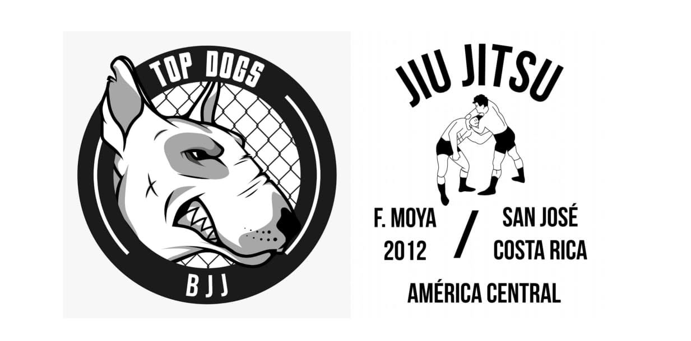
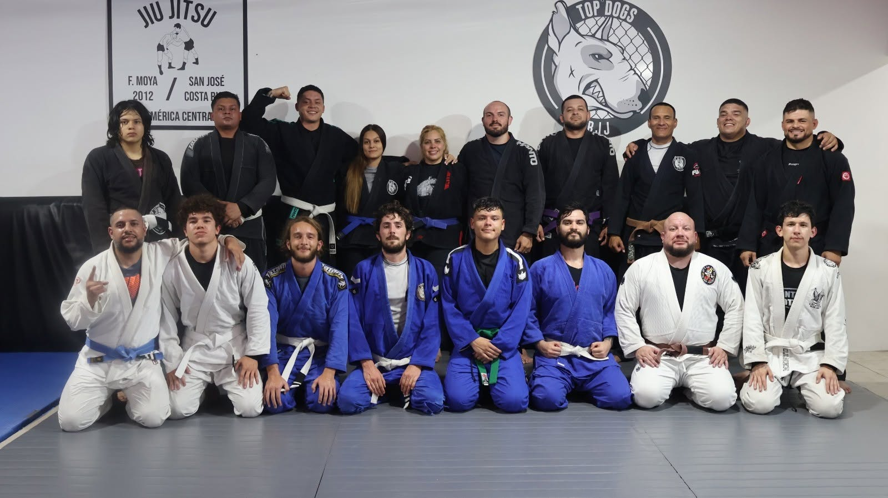
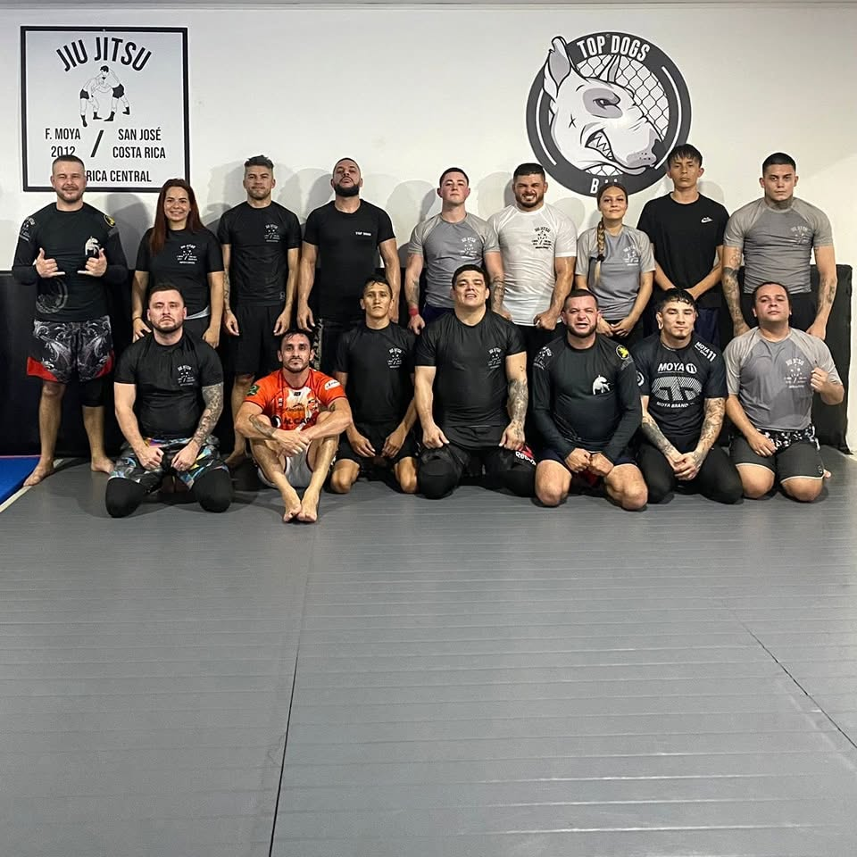
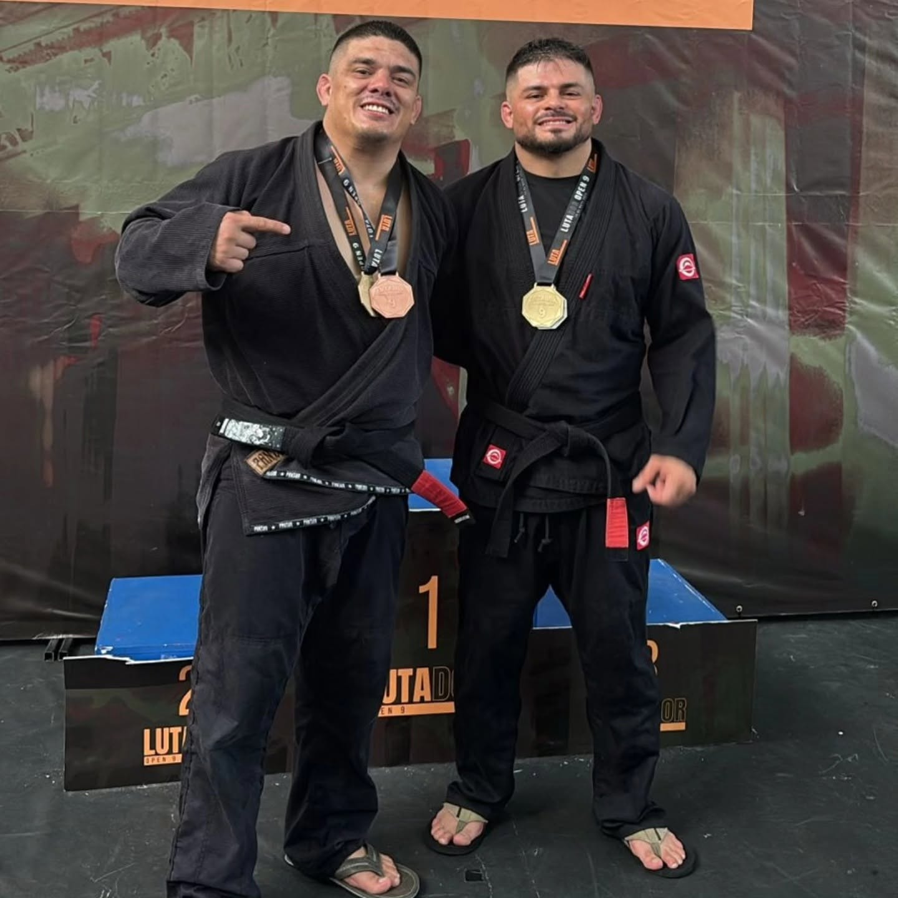
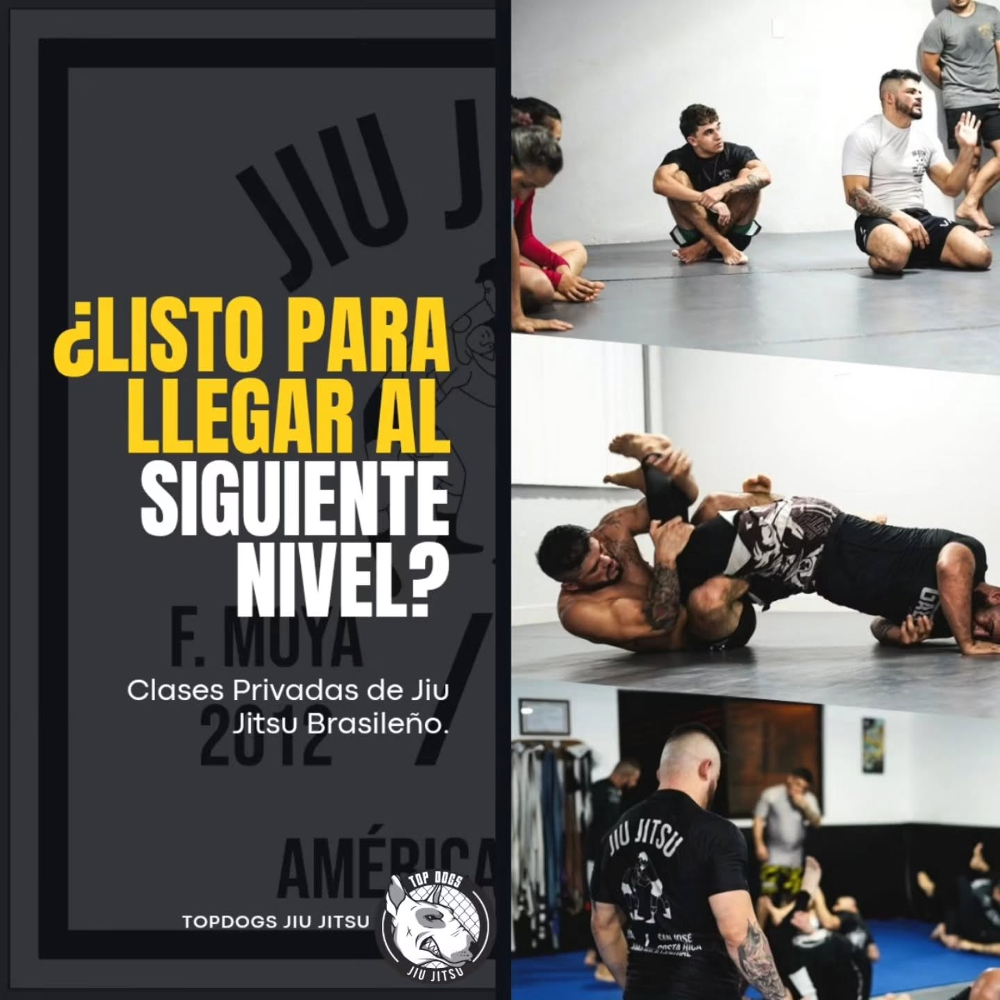

Jiu Jitsu Gi
El arte de los detalles. Trabaja controles, agarres y transiciones con kimono.
Ver clases con kimono ↗
TOP DOGSJIU JITSU · COSTA RICA
SAN JOSÉ, COSTA RICA DISCIPLINA · TÉCNICA · COMUNIDAD
Jiu jitsu, disciplina y una comunidad que entrena contigo.
Tu siguiente paso empieza en Top Dogs.
01 / NUESTRA ESENCIA
El jiu jitsu se aprende en el tatami. La confianza se construye juntos. Top Dogs es una academia de jiu jitsu brasileño en San José, Costa Rica, afiliada a Fernando Moya Jiu Jitsu.
Con kimono o sin él, compartimos una misma idea: trabajar la técnica, respetar a quien entrena a nuestro lado y seguir aprendiendo. Aquí cada entrenamiento es una oportunidad de avanzar.
Conoce a nuestros profesores ↗
02 / ENCUENTRA TU MODALIDAD
Fundamentos, técnica y práctica.
Un espacio para todos los niveles.
El arte de los detalles. Trabaja controles, agarres y transiciones con kimono.
Ver clases con kimono ↗Movimiento y adaptación. Desarrolla tu juego sin kimono, desde los fundamentos.
Ver clases No-Gi ↗Empieza de pie. Practica entradas, derribos y control para complementar tu jiu jitsu.
Ver wrestling ↗03 / HAZLE ESPACIO A TU PROGRESO
Con kimono
GITécnica y práctica
WRESTLINGSin kimono
NO-GIFundamentos
NO-GICon kimono
GIConfirma con el profesor si el horario corresponde a la mañana o la noche y consulta cambios antes de tu primera visita.

04 / APRENDE CON EL EQUIPO
La técnica cobra sentido cuando alguien te ayuda a entenderla. Conoce a los profesores de Top Dogs y encuentra orientación para construir tu propio juego.
05 / INVIERTE EN TU PROCESO
Consulta las tarifas vigentes
directamente con el equipo.
ENTRENA EN EQUIPO
Consultar tarifa
Inscripción única: ₡10.000. Clases grupales de jiu jitsu. Consulta las modalidades y frecuencia incluidas. Puedes solicitar una clase de prueba con el profesor.
Consultar mensualidad ↗ENFOQUE PERSONALIZADO
Consultar tarifa
Una sesión centrada en tus objetivos: reforzar fundamentos, trabajar una posición o afinar tu técnica. Tarifa provisional, sujeta a confirmación con el profesor.
Solicitar una sesión ↗06 / DA EL SIGUIENTE PASO
Solicita tu clase de prueba o una sesión privada. Cuéntanos qué quieres trabajar y cuándo te gustaría entrenar. La solicitud se prepara en WhatsApp para coordinar con el profesor.
La cita queda confirmada cuando el profesor acepta la fecha y la hora. No se realiza ningún pago en esta página.

07 / AQUÍ EMPIEZA TODO
Barrio La Conquista, Llanos del Sol.
San José, Costa Rica.
TRAIN HARD. BE BETTER.
SÉ PARTE DE